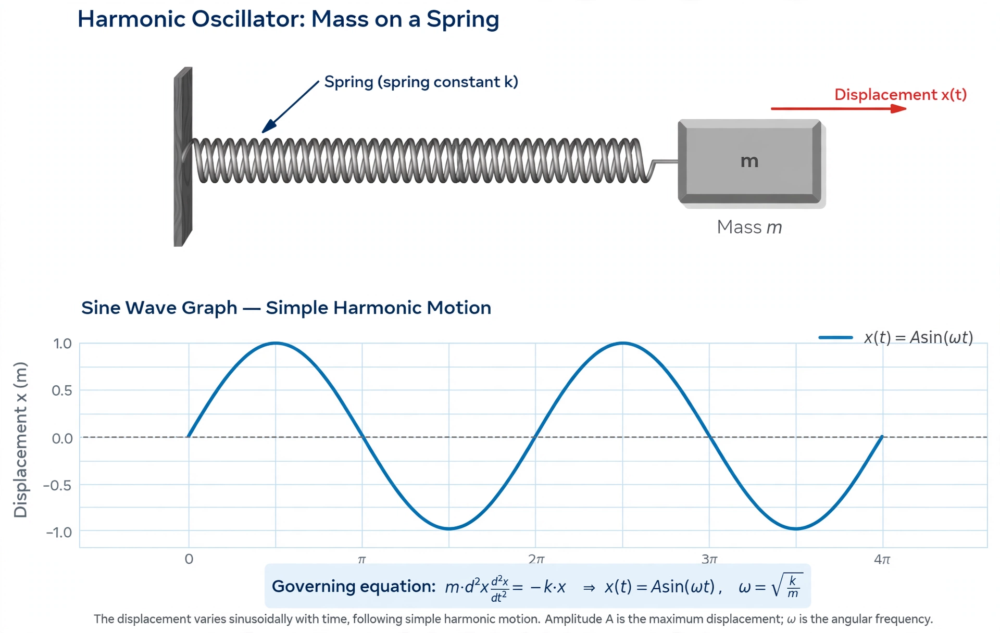

Oscillation is the repetitive or periodic variation, typically in time, of some measure about a central value or between two or more different states. Familiar examples include a swinging pendulum and alternating current.

The simplest mechanical oscillating system is a mass attached to a spring obeying Hooke's law, producing simple harmonic motion — sinusoidal oscillation with constant amplitude and frequency. Damping gradually reduces amplitude; driving can sustain it and produce resonance.
Oscillations occur in electrical circuits (LC oscillators), sound and light waves, heartbeat and circadian rhythms, business cycles, and climate patterns such as El Niño. Coupled oscillators can synchronise, as in Huygens's clocks.
Key quantities are amplitude, period, frequency (measured in hertz), phase, and angular frequency.